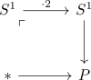
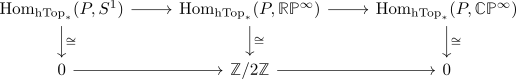

hTop* does not admit pushouts
Proposition
The Category hTop* does not admit pushouts
Proof
Suppose there exists a pushout

Then $\mathrm{Hom}_{\mathrm{hTop}_*}(P,X)$ would classify the 2-torsion elements in $\mathrm{Hom}_{\mathrm{hTop}_*}(S^1,-) \simeq \pi_1(-)$.
Now recall that the long exact sequence of a serre fibration works also for boomers and consider the serre fiber sequence
\begin{align*}
S^1 \rightarrow \mathbb{R}\mathbb{P}^{\infty} \rightarrow \mathbb{C}\mathbb{P}^{\infty}
\end{align*}
(up to serre fibrant replacement etc.)
Then we would get an exact sequence

which is impossible.